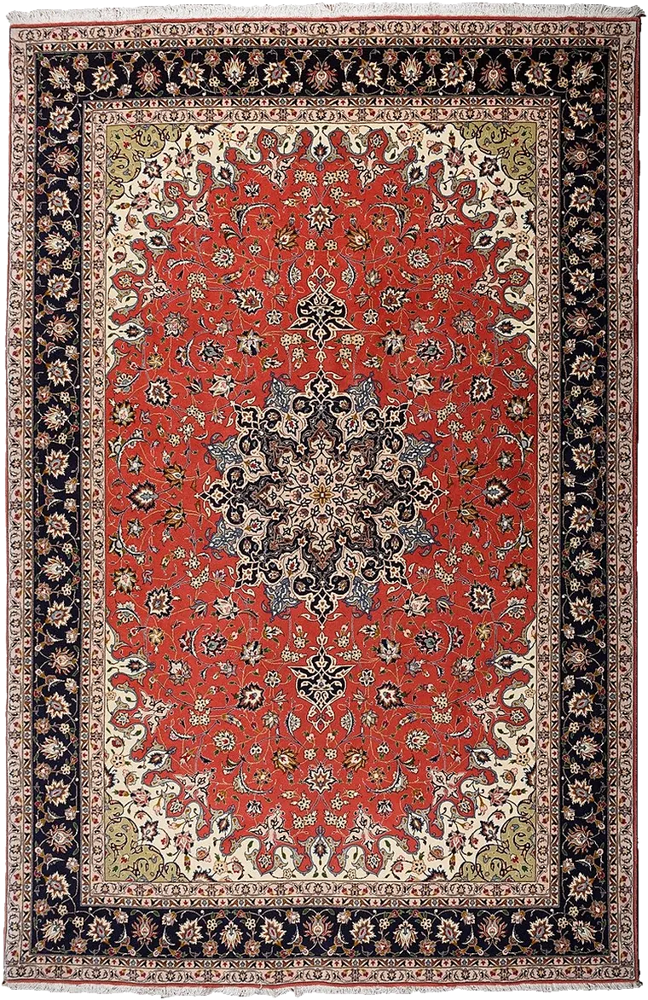
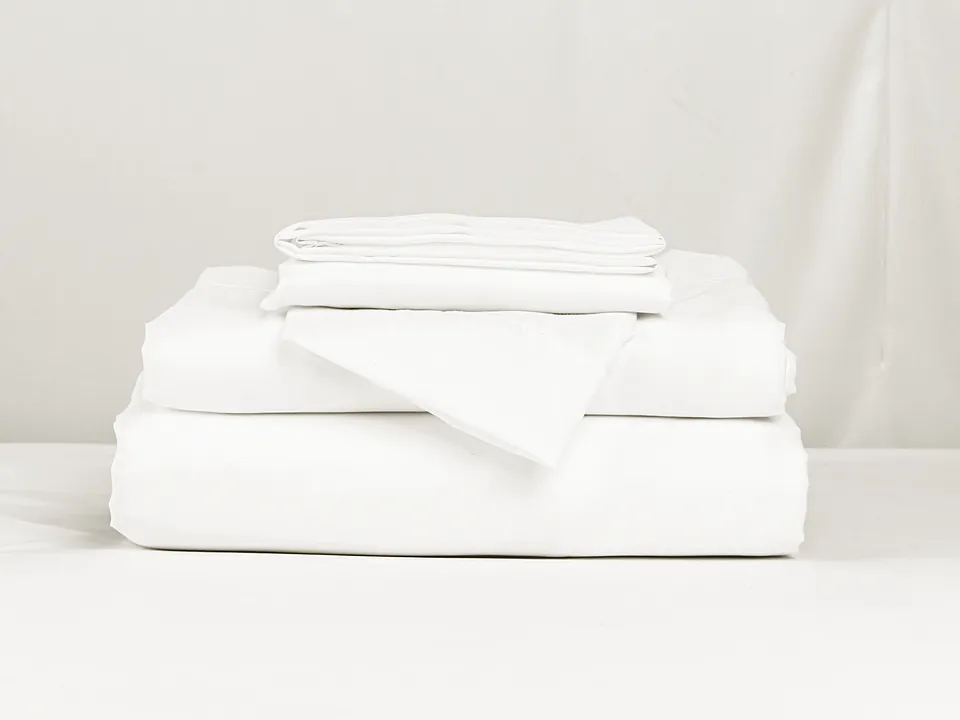
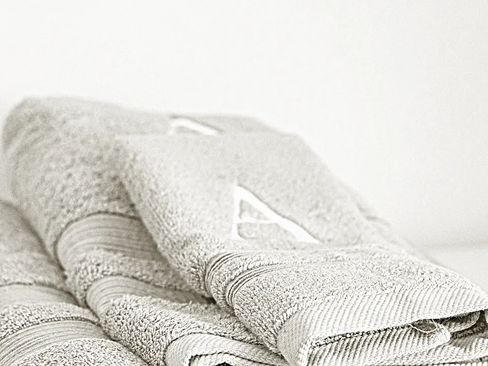
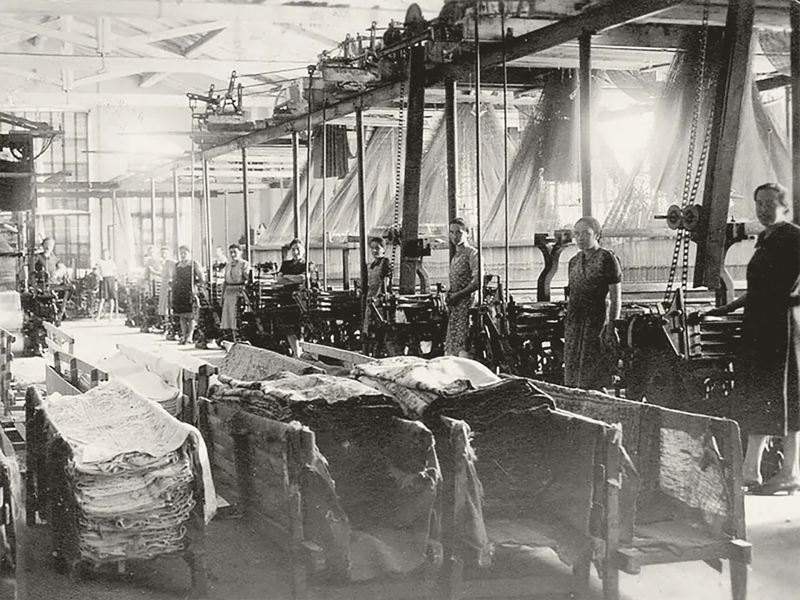
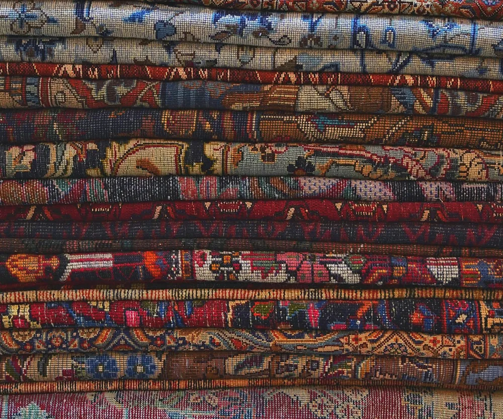

Tessile casa dal 1895
Biancheria per la casa e per l'albergo, piumini, coperte, tende e tappeti annodati a mano: circa 20.000 articoli all'ingrosso, da quattro generazioni, a Padova.

Tabriz ghali, lana annodata a mano con inserti in seta, 205 × 298 cm. Marchio Alans, dal nostro negozio online.
Circa ventimila articoli, dal letto al tappeto
Lenzuola e biancheria per la casa, piumini e trapunte, coperte, asciugamani e accappatoi, tende, tappeti annodati a mano e altro.
L'assortimento: tendaggi, tappeti orientali annodati a mano, tappeti meccanici classici e moderni, tappeti bagno e cucina, coperte, trapunte, piumoni, copriletto, materassi, copridivano, biancheria per la casa, telerie e lenzuola, tovaglie, strofinacci, grembiuli e presine, lingerie, asciugamani, teli mare e accappatoi. Con i nostri marchi Servalli, Serline, Alans e Colorcasa; la maggior parte degli articoli si fa su misura e nei colori che servono.

Per la casa
Lenzuola e copripiumini, piumini e trapunte, bagno, tappeti, articoli da bambino e mare. Dal 2022 si comprano anche online, con consegna in tutta Italia.
Entra nel negozio
Per alberghi e rivenditori
Su misura per hotel, SPA, residence, lavanderie e comunità, con il vostro logo stampato o ricamato, anche in versione ignifuga. Rivenditori, grossisti e alberghi hanno condizioni riservate.
Chiedete le condizioniDal 1895, a Padova dal 1967
Le prime notizie della famiglia Servalli come produttori e mercanti tessili, tra Venezia e Bergamo, sono del Seicento. L'azienda nasce a Gandino, in provincia di Bergamo; oggi è al Centro Grossisti di Padova.

1895
«La storia recente inizia alla fine del 1800 con Andrea Servalli in provincia di Bergamo, con l'apertura di una tessitura e l'acquisizione dello storico Lanificio Testa a Gandino.»
Il reparto di tessitura, 1910.
Riconoscimenti
- 1976Premio Città di Padova, primo classificato Manifatture Tessili Servalli.
- 1986Premio regionale per lo sviluppo economico, dall'Unione regionale delle Camere di commercio del Veneto.
- 1994Franco Servalli Imprenditore '93 al Salone Nuova Impresa di Padova Fiere e Ascom.
Possiamo fornire tutti i prodotti tessili di cui potreste avere bisogno
Via Portogallo 11, int. 34-35, 35127 Padova
al Centro Grossisti, zona industriale
Lunedì-venerdì 9:00-17:30, sabato e domenica chiuso
